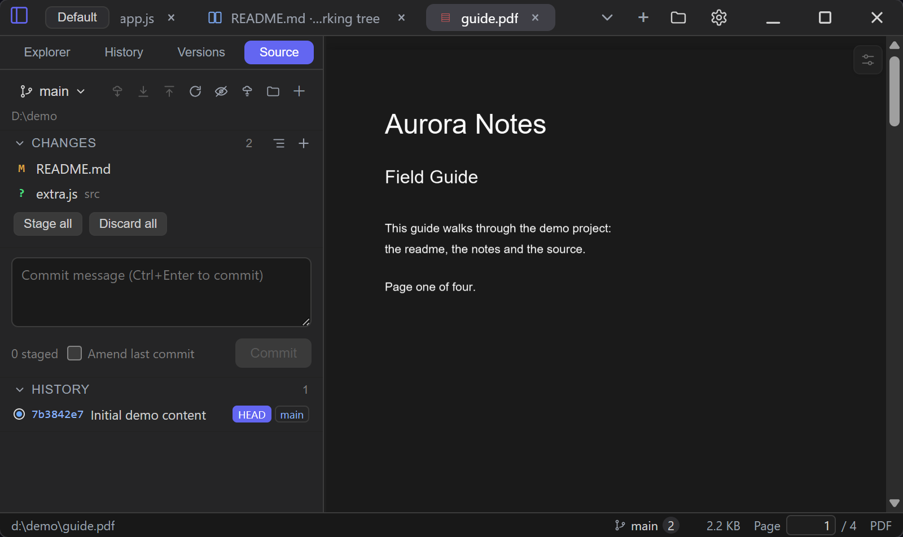
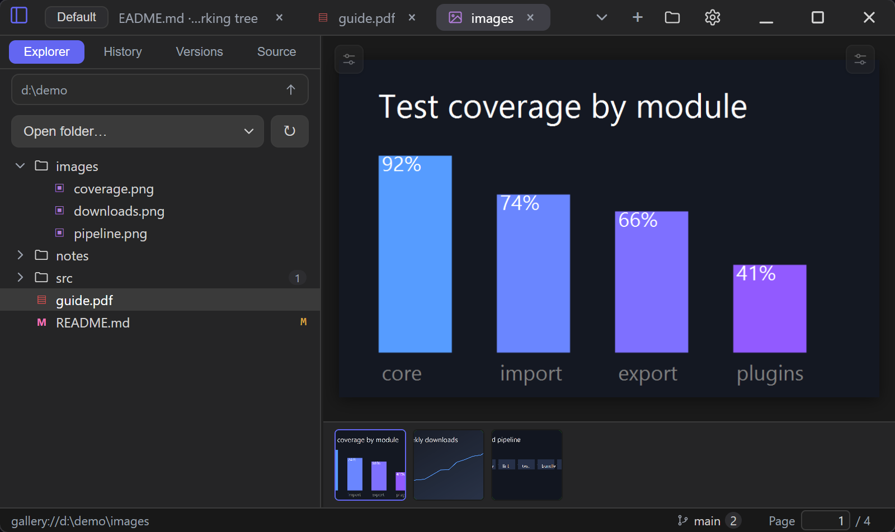

PDFs & pictures
PDF paper, bookmarks and auto-scroll, plus the four views of the folder gallery.
Reading PDFs#

A .pdf tab is drawn by pdf.js in place of the editor. The pages form one continuous column, the page box in the status bar jumps to a page by number, and where you stopped is written down per file — page and position in it — so a document reopens where it was left.
Size. Fit (the default) keeps a page as wide as the pane and the box reports what that comes to; the arrows step 50, 75, 100, 150, 200 and 300 %, and a percentage can be typed (25–400). Fitting is measured on the page's own width, so a scan of an unusual size still fills the pane the same way.
Paper. White, warm, green, night, or any colour the system picker gives you. Night inverts the sheet and the text but cuts the pictures out of the inversion, so a photograph on the page stays the photograph it was. The choice is remembered.
Bookmarks. A document with an outline can show it as a column on the edge set in Settings → Preview; it opens with the document only when the same page says so, and otherwise waits behind the corner tab. Branches fold from their −/+ box one at a time, or all at once from the column's header, and the dotted guide under each level keeps a deep outline readable. A title jumps to the page it names; a bookmark pointing outside the document leaves the reader where they are.
Automatic scroll. The tool sets the pages moving and the slower / faster buttons change the pace (10–240 px/s). A wheel or a double click stops it — a single click only folds the tools away, so tapping the page to read does not lose the place.
Picture gallery#

Right-click a folder in the Explorer — or the blank space under the tree — and choose Browse pictures. The folder opens in its own tab with four ways to look at the same naturally ordered list:
- Stacked (the default): every picture one after another, at most its own width and never stretched, with its name, size and dimensions above it.
- One by one: one picture with zoom, fit and 100%, plus a filmstrip of the folder.
- Slideshow: the same pane advancing on a timer. Hovering the picture pauses it, and so does leaving the window; the pace and looping are settings, and also reachable from the gallery toolbar.
- Grid: square thumbnails, small or large. Clicking any picture opens it one-by-one at that position.
A picture opened in a normal tab has a Browse folder button that opens its folder and lands on it. The gallery reads only local folders — it does not contact an image host, upload anything or produce links.
Behind a picture's transparent pixels sits a checkerboard taken from the theme. The row of swatches in the picture's toolbar — the same ones are in Settings → General — swaps that for white, black, or any colour the system picker gives you, which is how a white logo stops vanishing into a light backdrop; the choice covers the gallery's thumbnails as well, and is remembered for every picture.
Only pictures near the viewport are mounted, and ones two screens away are removed from the DOM so Chromium can release the decoded bitmap; in the stacked view the space they occupied is kept, so scrolling back does not jump. In the stacked view Up/Down scroll the column and Left/Right move between pictures; in one-by-one and slideshow Left/Right move between pictures. Home/End jump to the ends, Space plays or pauses a slideshow (and pages the stacked view), and Esc returns to one-by-one. Folder changes made in the Explorer refresh an open gallery. gallery:// tabs are never written into a saved group, so restarting brings back files only.
A picture that is also text — an SVG above all — can be looked at either way. Switched to text-only it says so in a hint, whose Show the picture goes straight to the picture and whose × sends the notice away for that file.